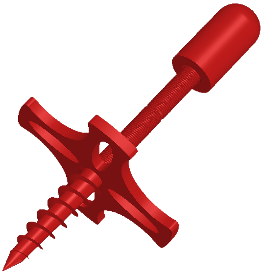
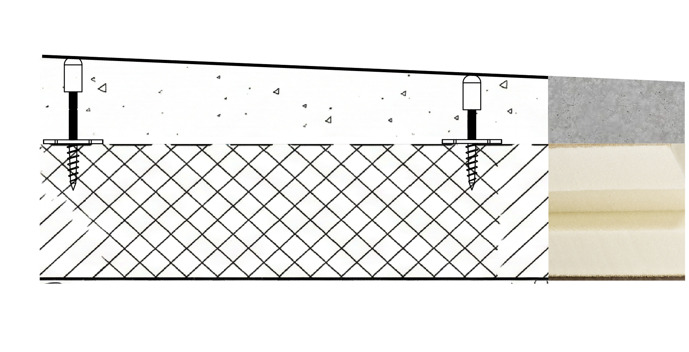

Innovation récompensée en mai 2026 par la Fondation du Cnam.
La précision absolue.
Sans rebouchage.
Pic à Pente est la première pige de nivellement sacrificielle en polymère recyclé. Il se visse dans l'isolant, se règle au laser et reste noyé dans la chape. Nivellement précis, respect des pentes, et chantier terminé dès la fin de la pose.

L'innovation au service du chantier
Une conception ingénieuse pour supprimer les erreurs humaines et le temps perdu.
Un réglage qui ne bascule pas
Fini les outils simplement posés qui s'inclinent au moindre coup de brouette ou de seau, faussant la pente sans prévenir. Le Pic à Pente se visse solidement dans l'isolant : une fois réglé, il encaisse les chocs et ne bouge plus d'un millimètre pendant la pose.
Précision laser & Zéro rebouchage
Terminé le nivellement "à l'œil". Vous ajustez la tête au laser avec une précision absolue. Et comme le Pic à Pente reste noyé dans la chape, vous n'avez plus aucun outil à retirer dans le frais, et donc plus aucun trou à reboucher à la truelle en fin de journée.

Implantation stratégique
Vissez vos Pics à Pente exactement là où le chantier l'exige. Vous pouvez facilement créer un quadrillage sur-mesure qui coïncidera avec les joints de votre futur revêtement final (comme le carrelage), pour anticiper et faciliter la pose.
Une innovation récompensée
Lauréat du Grand Prix Charles-Henri Besnard — Mai 2026
Décerné par la Fondation du Cnam, le Grand Prix Charles-Henri Besnard soutient les innovations techniques et pratiques destinées aux professionnels du bâtiment. En choisissant de primer le Pic à Pente, le jury a validé la pertinence de l'outil sur les chantiers, soulignant que le projet s'inscrit pleinement dans « l'art de construire ».